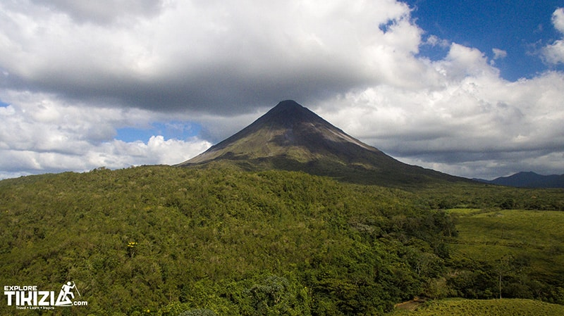
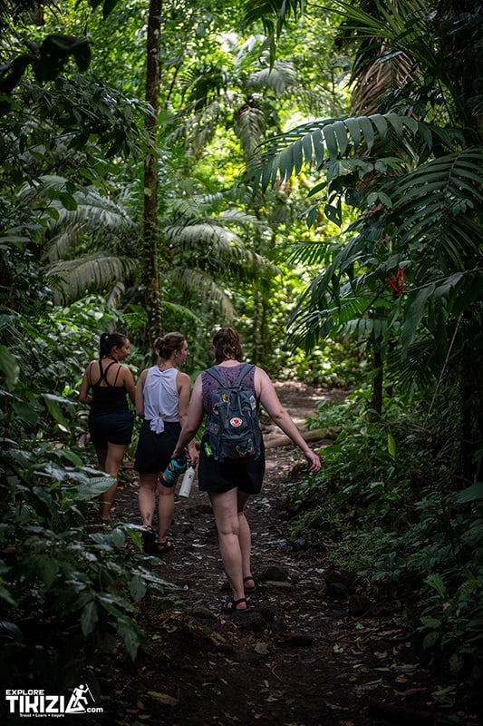

Arenal Volcano NP
Attraction
Arenal Volcano
Arenal Volcano
National Park.
A near-perfect cone that erupted continuously from 1968 to 2010 and has been quiet since. The park protects the old lava fields on its western side — walkable, well signposted, and far emptier than the viewpoints people photograph it from.

- Entry
- $15 adult
- Open
- 08:00 – 16:00
- Time needed
- 2–4 h
- Difficulty
- Easy 1 of 5
- From town
- 25 min by car
Everything you need before you drive out.
The park has two sectors and most first-time visitors go to the wrong one. This is the practical detail, free, on the page — the $10 guide exists for the days we are not with you, not to hide the basics behind a paywall.
- Which sector
- The Peninsula sector holds the trails and the lava flow. The Arenal 1968 trails next door are privately run and charge separately — good, but not the national park.
- When to arrive
- At opening. The cone is usually clear until around 10:00 and clouded by early afternoon. Rangers stop admitting at 14:30.
- Getting there
- 25 minutes west of La Fortuna on Route 142, then a signposted gravel access road. Any hire car manages it in dry season. There is no public bus to the gate.
- Paying
- Card at the ranger station. Whether SINAC still accepts cash at this gate needs confirming with the client.
- Guide or not
- The trails are self-guided and signposted. A naturalist guide is what turns a walk into wildlife — they carry the scope and they see what you cannot.
Three walks, and which one to pick.

-
01
El Ceibo · 1.8 km
Through secondary forest to a ceibo tree several hundred years old. Flat, shaded, and the best of the three for birds and sloths. Around an hour.
-
02
Las Coladas · 2 km
Out onto the 1968 lava flow itself. Loose black rock underfoot, no shade at all, and the closest you get to the cone. Bring water and a hat.
-
03
Los Miradores · 1.2 km
Short spur to the lake viewpoint over Laguna de Arenal. Do it last, when the volcano has clouded over and there is nothing left to see of the cone.
Two things nobody mentions.
- You will not see lava. The volcano stopped erupting in 2010 — anyone selling you a "lava tour" is selling you a walk on rock that cooled decades ago.
- The cone is often invisible. It makes its own weather. If it is clear when you wake up, change your plan and go that morning.
- The park is the quiet option. Most visitors photograph the volcano from the road and never pay to walk under it.
Tours here
Three ways to do this one with us
Same products as the main catalogue, filtered to this attraction. The combo is the only one that leaves the park.
From the journal
We wrote the long version in 2019
It is still the most-read page on this site. It keeps its URL, its title and its readers — this page links to it, and it links back.
Prototype note: the post stays exactly where it is. This page targets the planning question — what it costs, when to arrive, which sector. The post keeps the first-person account. Pointing both at the same phrase would only split them.